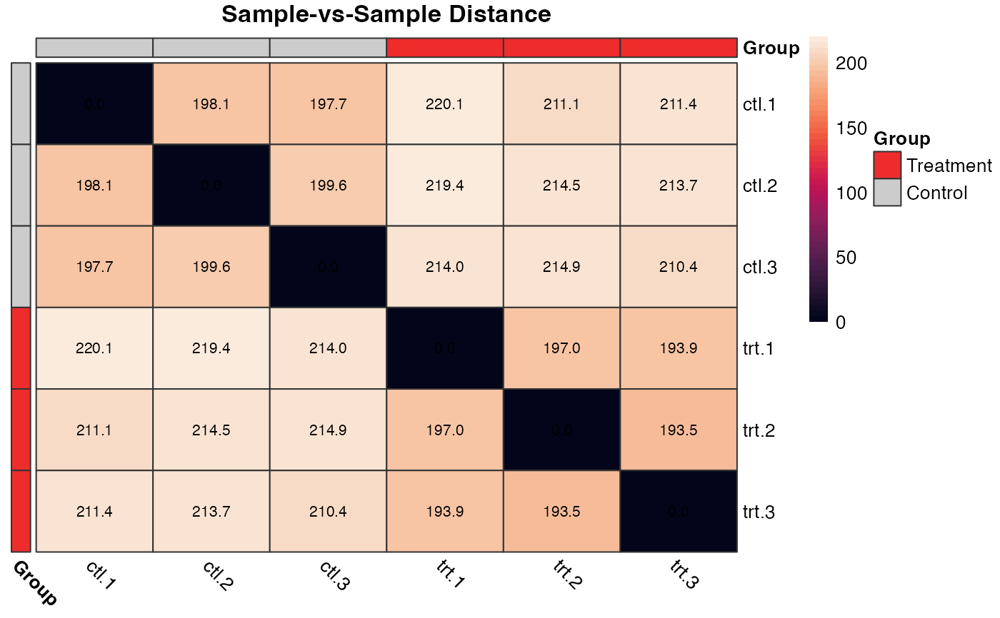
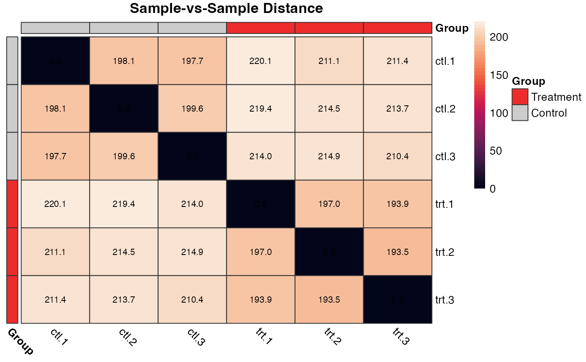

Create a column-vs-column heatmap of a matrix
Arguments
- x
numeric matrix or data.frame that can be converted to one. Samples in columns, features in rows.
- metadata
data.frame containing metadata to be used as row labels. Default NULL.
- method
distance method to be used. Must be one of the distance measure to be used. This must be one of "euclidean", "maximum", "manhattan", "canberra", "binary" or "minkowski"
- ...
additional values passed to
pheatmap::pheatmap()
Examples
# Generate a matrix of simulated counts
counts <- simulate_counts()$table
# Create annotation metadata
df <- data.frame(
row.names = colnames(counts),
Group = rep(c("Control", "Treatment"), each = 3)
)
# Show the sample-vs-sample distances
plot_dist(counts)
 # Additional arguments can be passed to the function
plot_dist(
x = counts,
metadata = df,
main = "Sample-vs-Sample Distance",
color = viridisLite::rocket(n = 50),
annotation_colors = list(Group = c("Treatment" = "firebrick2", "Control" = "grey80"))
)

# Additional arguments can be passed to the function
plot_dist(
x = counts,
metadata = df,
main = "Sample-vs-Sample Distance",
color = viridisLite::rocket(n = 50),
annotation_colors = list(Group = c("Treatment" = "firebrick2", "Control" = "grey80"))
)
